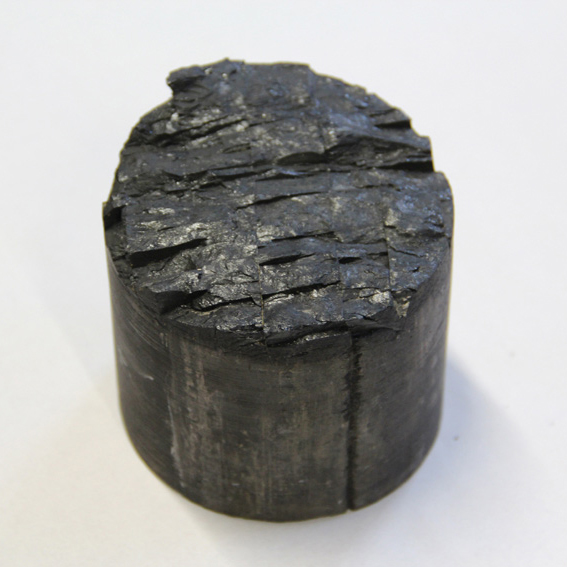

This project was a response to the geology archive at Wolverhampton Art Gallery, looking specifically at the coal fossils from the Black Country in collaboration with geologist Chris Broughton. The work was made during a residency at Wolverhampton University and some pieces were included in ‘The Riches Beneath Us’ exhibition at Bilston Craft Gallery, and ‘Temporal Permanence’ at Wolverhampton Art Gallery.
Saltwells, Dudley
Rise and Fall, Bronze with salt and vinegar patina, 2016
Coal core sample